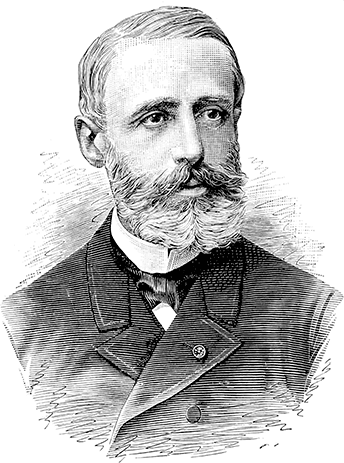

¿Sabías qué? Los primeros híbridos aparecieron en el siglo XIX. Nikolas August Otto (1832-1891), uno de los padres del automóvil, veía “el motor eléctrico como un genial invento que un día complementaría al motor de gasolina”. Tenía razón...
Los vehículos híbridos son una tecnología que nos acompaña desde siglo XIX, durante el auge de los sistemas eléctricos y de vapor. Distintos científicos e industriales de diferentes partes del mundo buscaban generar energía por los medios más asequibles en ese entonces, cuando era sumamente difícil extraer y transportar hidrocarburos como lo hacemos hoy en día. Todos ellos buscaban complementar la corriente alterna, la forma de transmisión de electricidad que más se utilizaba, con un motor de gasolina, de manera que cuando uno estaba en su etapa de mayor exigencia, el otro pudiera almacenar energía en estado potencial, para luego liberarla cuando fuera necesario.
Esta es una línea cronológica de los desarrolladores de distintos países que pusieron en marcha este grandioso plan:
1859,
Hasta ese año, todas las baterías tenían que ser vaciadas de forma permanente cuando se agotaban. Pero entonces Gaston Planté, un científico francés, invento la batería de plomo-ácido, el primer acumulador, o lo que es lo mismo: la primera batería que podía recargarse.
Tras las baterías recargables, se produjeron una serie de hitos en la incipiente industria híbrida, unos con más fortuna que otros:
1890
Se exhibió en Chicago un tranvía con propulsión híbrida con un motor de gas y otro eléctrico. También en 1890 cuando W.H. Patton tuvo la idea de hacer un tranvía con propulsión híbrida en serie (un motor apoyaba al otro), con un motor de gas y eléctrico.
1896
El británico J. H. Dowsing montó en un auto un dínamo que encendía el motor de gasolina, o propulsaba el auto, o recargaba las baterías. Simultáneamente en 1896 H. J. Dowsing y L. Epstein (Reino Unido) patentaron ideas sobre tecnología híbrida en paralelo (ambos motores alimentan la transmisión de las ruedas), que posteriormente fueron utilizadas en Estados Unidos para mover vehículos grandes, como camiones o autobuses. Dowsing llegó a montar en un Arnold un dínamo que o bien arrancaba el motor de gasolina, propulsaba o bien recargaba baterías, tal vez fue el primer híbrido de la Historia.
1898
El español Emilio de la Cuadra, junto a dos investigadores suizos, fabricó una gama de cuatro modelos que podían tener un motor de gasolina unido a un generador eléctrico, que se encargaba de recargar las baterías constantemente (lo que hoy llamamos híbrido en serie). No tuvo éxito comercial y quebró.
1899
La gama inicial de cuatro modelos constaba de un carruaje biplaza, una camioneta, un camión y un autobús, todos eléctricos. Los hermanos belgas Henri y Nicolás Pieper construyeron su Voiturette, con un motor de gasolina unido a uno eléctrico que se encontraba debajo del asiento. A velocidad de crucero el motor eléctrico generaba electricidad para las baterías, para luego dar potencia adicional al subir pendientes o acelerar. Se dedicaron a su comercialización hasta vender la empresa a Henry Pescatore.
1900
Ferdinand Porsche en 1900 produjo los primeros prototipos de autos híbridos. En Estados Unidos la Batton Motor Vehicle Corp desarrolló un camión híbrido que utilizaba la patente de L. Epstein, pero no se sabe si alguna empresa le dio continuidad al modelo. En 1900 fue presentado el primer autobús híbrido, en el mismo país, por la empresa Fischer. Lamentablemente en esa época, resultaba carísimo y muy aparatoso almacenar la energía. Ferdinand Porsche, de 24 años logró utilizar la energía eléctrica para mover motores eléctricos ubicados en el eje delantero, así logró que la electricidad excedente se almacenara.
1900
Este fue considerado el primer auto híbrido de producción del Mundo y el primer vehículo de tracción delantera, tenía 64 km de autonomía utilizando únicamente la energía eléctrica almacenada en las baterías. El modelo no tenía conexión mecánica entre el motor de combustión y las ruedas, así que no necesitaba transmisión o embrague. Se mostró por primera vez el 14 de abril de 1900 en la Exposición Mundial de París, sorprendiendo gratamente a los entusiastas del automóvil. Se fabricaron 300 unidades del Lohner-Porsche y catapultó a Porsche como ingeniero.
1911
En 1911, el primer vehículo híbrido gasolina- eléctrico fue puesto en circulación por la Woods Motor Vehicle Company de Chicago. El híbrido fue un fracaso comercial, demostrando ser demasiado lento para su precio, y con un mantenimiento complicado.
Los autos eléctricos sufrieron una decaída conforme el siglo XX fue avanzando. A pesar de la popularidad que habían obtenido a principios de siglo, para la década de 1920 fueron superados por los vehículos con motor de combustión.
Esto se debió a varios factores, el primero fue que mejoró la infraestructura vial, esto hizo que los automotores tuvieran mayores exigencias en carretera. También el descubrimiento de grandes reservas de petróleo hizo que la gasolina a mayor disposición de la industria automovilística. Logrando así que los vehículos de gasolina fueran más baratos y capaces de operar a través de largas distancias.
Los autos eléctricos y sus prototipos híbridos estaban limitados para el uso urbano por su velocidad lenta (no más de 24 a 32 km/h o de 15-20 mph) y de corto alcance (30-40 millas o 50-65 km), y los autos de gasolina eran ahora capaces de viajar más lejos y más rápido que sus equivalentes eléctricos.
La fabricación de automóviles híbridos se había detenido casi completamente para finales de la década de 1910. Es hasta 1976, en Japón, que Toyota muestra un prototipo de deportivo híbrido en serie movido por turbina de gas (GT) y un motor eléctrico. Se llamaba el Toyota GT Hybrid Concept, basado en el Toyota Sports 800 de 1969. Así es, el Prius no fue el primer híbrido de Toyota.
Pero no es hasta mediados y finales de los años 90 cuando los primeros autos híbridos saltan al mercado. La marca más valiente fue Toyota con (¡ahora sí!) su modelo Prius. Fue el primer híbrido de producción masiva del mundo, reduciendo las emisiones de hidrocarburos gracias a su eficiencia y capacidad. El primer año vendió 18.000 unidades. En la actualidad, Toyota ha vendido más de diez millones de autos híbridos a lo largo y ancho del mundo. El Prius, caracterizado por ser un automóvil híbrido de excelente desempeño, una grandiosa economía en el consumo y amigable con el medio ambiente a un precio accesible, logró cuantificar más de tres millones y medio de ventas.